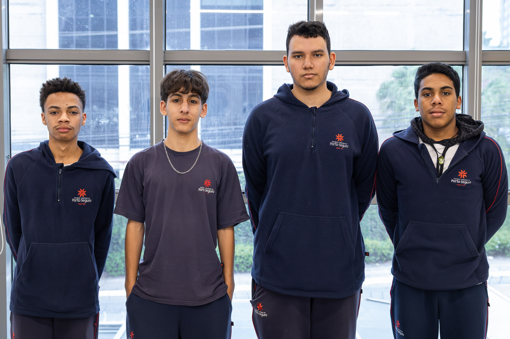

Sobre o Projeto Cash View
Da confiança à transformação
🎯 A Origem
O Cash View nasceu como evolução do projeto acadêmico "Paper Money: From Trust to Transformation", desenvolvido por estudantes do Colégio Porto Seguro. O projeto original investigou a evolução histórica do dinheiro — desde o escambo até as criptomoedas — com foco especial na desmaterialização do dinheiro e seus impactos na consciência financeira das pessoas.
Inspirados pela pesquisa, decidimos criar uma solução prática: um aplicativo web que transformasse conceitos teóricos em ferramentas reais de educação financeira.
🎓 Nossa Missão
Promover educação financeira prática e acessível através da tecnologia, tornando o "dinheiro invisível" do mundo digital algo visual, compreensível e consciente.
Queremos que cada usuário sinta o impacto real de suas decisões financeiras — não apenas vendo números, mas compreendendo o que eles significam para seu futuro.
🔮 Nossa Visão
Transformar a relação das pessoas com o dinheiro digital, capacitando-as a:
- ✓ Compreender juros e suas consequências de longo prazo
- ✓ Tomar decisões financeiras reflexivas, não impulsivas
- ✓ Visualizar gastos de forma clara e comparativa
- ✓ Desenvolver hábitos financeiros saudáveis através da gamificação
- ✓ Proteger-se de golpes e armadilhas do mundo digital
👥 Nossa Equipe
Estudantes do Ensino Médio | Colégio Porto Seguro
💡 Inspiração
Este projeto foi inspirado e fundamentado na pesquisa "Paper Money: From Trust to Transformation", que explorou:
- 📜 A evolução histórica do papel-moeda e seu papel na construção da confiança nos sistemas financeiros
- 💳 A transição do dinheiro físico para o digital e seus impactos sociais
- ⚠️ Os desafios da era digital: golpes, exclusão financeira e perda de consciência sobre gastos
- 🌐 A importância da inclusão digital e alfabetização financeira
⚙️ Tecnologias Utilizadas
🏫 Créditos
Instituição: Colégio Porto Seguro
Disciplina: Escola de Negócios - Ensino Médio
Projeto Original: Paper Money: From Trust to Transformation
Evolução: Cash View - Aplicativo Web de Controle Financeiro
Ano: 2025